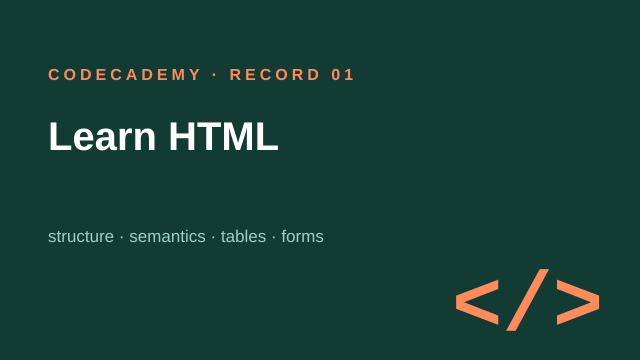
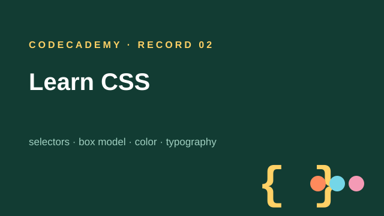
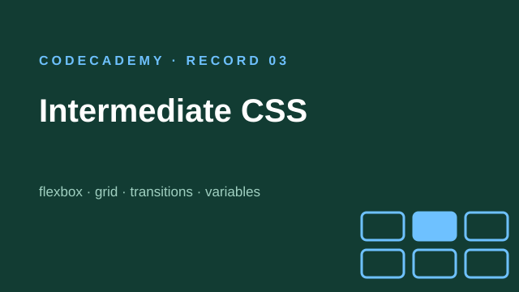
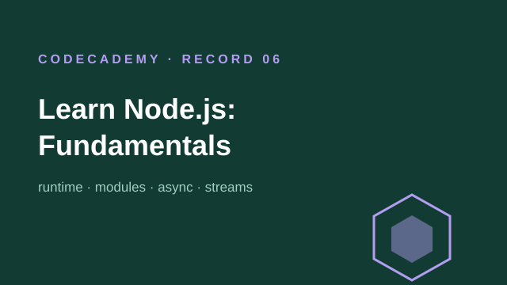

Platform: Codecademy
Codecademy Records
Notes from Codecademy courses on web development and computer science fundamentals. Like my other records, these keep the original wording and screenshots from my notebook, so they work best as a map of what each course covers.
Codecademy Platform Preface
这是我在codecademy平台接触的第一门课，应该是我想学习搭建网站的时候AI推荐的学习资源，这个平台和我原来习惯的视频学习方式很不同，刚开始也只是想着没事像闯关一样玩一下，然后逐渐发现乐趣。
虽然现在我感觉我的网页开发水平也只是入门，但在当时当我发现我可以自己写HTML并在网页显示的时候，是很惊喜的。
通过这门课，我解锁了codecademy这个平台，感觉这个平台对于快速学习一些技术是挺有帮助的。
这个平台的记录一般是我复制每个章节最后的review整合到一起，原意是便于自己回忆，但是其实感觉我想回忆相关知识倒也不会看这些，因为codecademy对于大部分课程都有cheatsheet可以用来回顾。
当前的记录方式其实不是很利于读者阅读，我把这些笔记留在这里主要是做个标记，读者也可以大致浏览知道每门课的内容，但是我不是很建议单纯使用这些笔记来学习，我认为这可能会毁了你的学习体验。后续挺多节课的记录方式都基本都是这样，但对于新笔记我会采取新的方式(按顺序应该在Learn the Command Line课程后面)，应该是在开头写自己的总结和收获，希望更利于读者阅读与学习。

Record 01
Learn HTML

Record 02
Learn CSS

Record 03
Intermediate CSS
Record 04
Building Interactive JavaScript Websites
Record 05
Introduction to Back-End Programming

Record 06
Learn Node.js: Fundamentals
Record 07
Learn Node.js: Setting Up a Server
Record 08
Fundamentals of Operating Systems
Record 09
Cloud Computing
Record 10
Git: Team Collaboration Cheat Sheet
Record 11